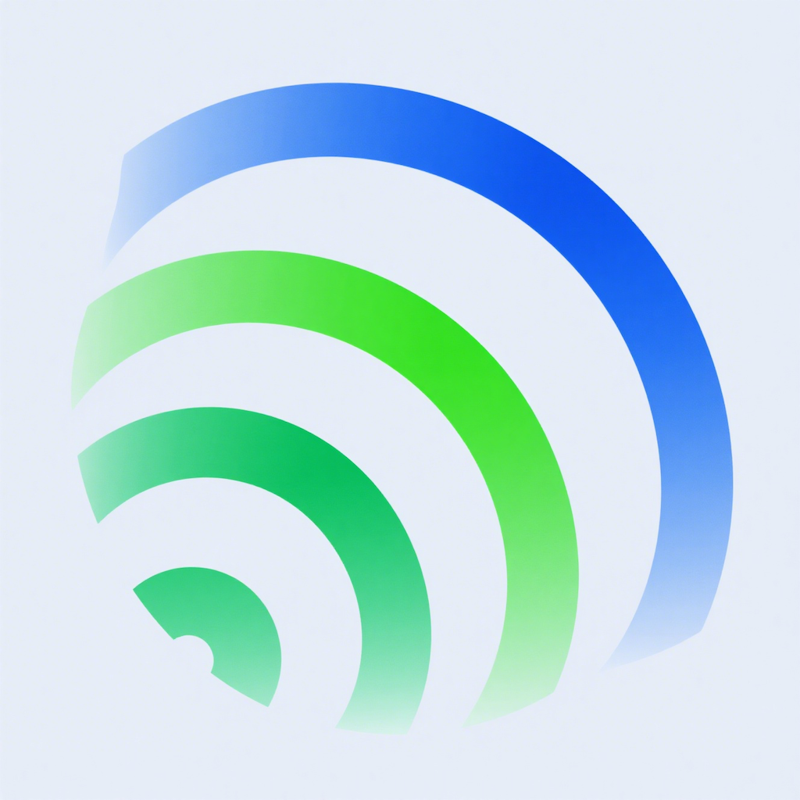

姿正点 技术支持
专注于姿势监测与矫正，为您的健康保驾护航
常见问题
应用无法正常监测姿势怎么办？
请尝试以下解决方案：
1. 检查是否已授予应用摄像头和传感器权限（设置 → 姿正点 → 权限）
2. 确保光线充足，摄像头可清晰捕捉到您的上半身
3. 重启应用或设备后重新尝试
4. 确认应用为最新版本（前往应用商店检查更新）
如何调整姿势提醒的灵敏度？
打开应用后，点击底部「我的」→「设置」→「提醒设置」，可根据个人需求调整灵敏度滑块，共分为低、中、高三个档位。建议初次使用选择中等灵敏度，适应后再根据习惯调整。
应用会消耗大量电量吗？
本应用经过优化，正常使用时不会显著增加电量消耗。若发现耗电异常，可能是由于后台持续运行导致，建议：
1. 在不使用时关闭应用
2. 降低监测频率（设置 → 监测设置 → 调整采样间隔）
3. 关闭不必要的提醒方式（如震动提醒）
数据会保存在哪里？可以同步到其他设备吗？
目前所有监测数据仅存储在您的本地设备中，保障数据隐私安全。暂不支持跨设备同步功能，我们会在后续版本中考虑增加该功能，敬请期待。
联系我们
应用更新
我们会定期更新应用以优化功能和修复问题，建议开启自动更新功能。最新版本信息可在应用商店查询。
技术支持页面最后更新：2025年7月26日
姿正点 版权所有